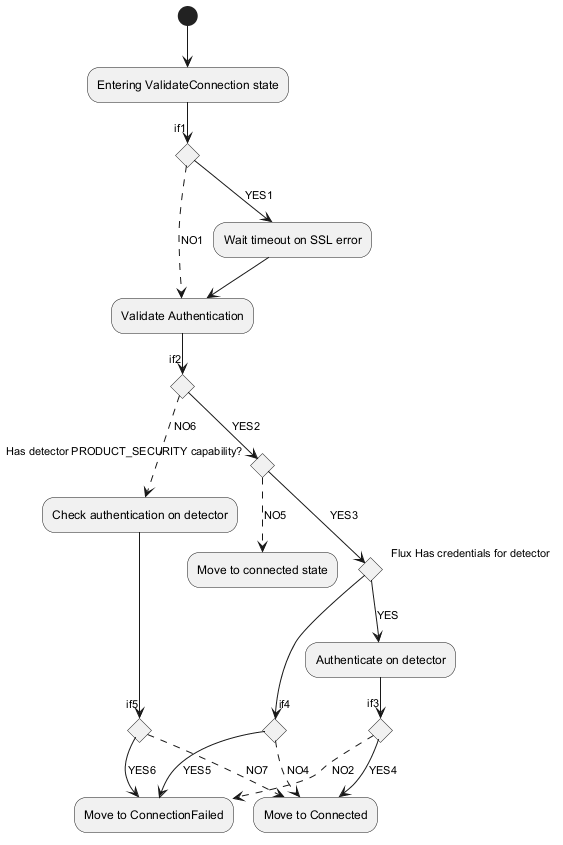

@startuml
skinparam shadowing false
(*) --> "Entering ValidateConnection state"
If "if1" then
--> [YES1] Wait timeout on SSL error
--> "Validate Authentication"
else
-[dashed]-> [NO1] "Validate Authentication"
--> if "if2" then
--> [YES2] if "Has detector PRODUCT_SECURITY capability?" then
--> [YES3] if "Flux Has credentials for detector" then
--> [YES] Authenticate on detector
--> if "if3"
--> [YES4] "Move to Connected"
else
-[dashed]-> [NO2] "Move to ConnectionFailed"
endif
else
if "if4" then
--> [YES5] "Move to ConnectionFailed"
else
-[dashed]-> [NO4] "Move to Connected"
endif
endif
else
-[dashed]-> [NO5] "Move to connected state"
endif
else
-[dashed]-> [NO6] Check authentication on detector
if "if5" then
--> [YES6] "Move to ConnectionFailed"
else
-[dashed]-> [NO7] "Move to Connected"
endif
endif
endif
@enduml